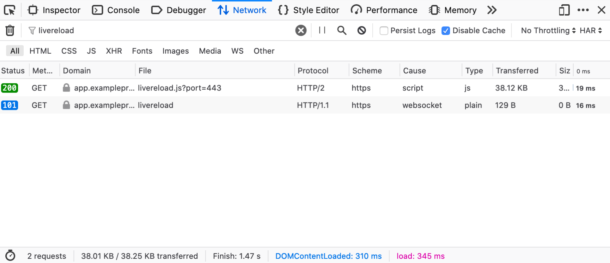

LiveReload Setup
LiveReload routing is currently supported only on the magento2 environment type. Other environment types may utilize LiveReload via per-project compose configurations to setup the routing for LiveReload JS and WebSocket endpoints.
Configuration for Magento 2
Magento 2 bundles an example grunt based server-side compilation workflow which includes LiveReload and it works within the Warden shell environment. In order to use this:
Rename or copy
Gruntfile.js.samplefile toGruntfile.jsin your project root.Rename or copy
package.json.samplefile topackage.jsonin your project root.Run
npm installto install the required NodeJS packages as defined inpackage.json.Merge the following into your project’s
app/etc/env.phpconfiguration file:<?php return [ 'system' => [ 'default' => [ 'design' => [ 'footer' => [ 'absolute_footer' => '<script defer src="/livereload.js?port=443"></script>' ] ] ] ] ];
Note
This can be accomplished via alternative means, the important part is the browser requesting
/livereload.js?port=443when running the site on your local development environment.Run
bin/magento app:config:importto load merged configuration into the application.
With the above configuration in place, you’ll first enter the FPM container via warden shell and then setup as follows:
Clean and build the project theme using grunt:
grunt clean grunt exec:blank grunt less:blank
Thereafter, only a single command should be needed for daily development:
grunt watchNote
Grunt should be used within the php-fpm container entered via ``warden shell``
This setup will also be used to persist changes to your compiled CSS. When you run grunt watch, a LiveReload server will be started on ports 35729 within the php-fpm container and Traefik will take care of proxying the JavaScript tag and WebSocket requests to this listener.
On a working setup with grunt watch running within warden shell you should see something like the following in the network inspector after reloading the project in a web browser.
